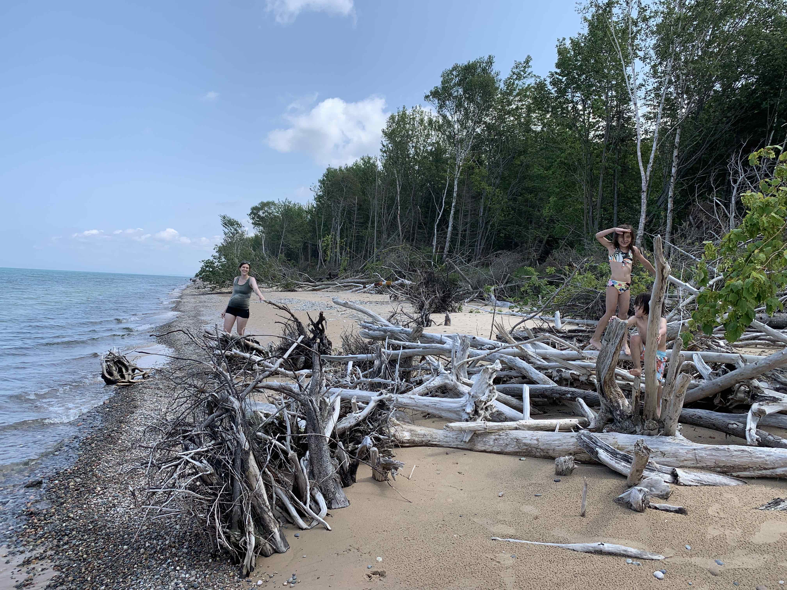

Upper Peninsula Michigan 2021
August 2021
After a brief stopover at Escanaba, MI our first "must see" stop was Kitch iti kipi Spring. It was pretty nice cause it's 42' deep hole in the ground where the water was so clear you could see the fish swimming. There is this empty bottom pontoon boat where the observer pulls themselves across. Dana thinks this is not really a must see.
Our second stop was at the 2nd highest fall east of the Mississippi River, Tahquamenon Falls.
We went back to set up our camp site at Lake Muskallonge and spent the next day driving east towards White Fish Point. I have to say, the east side of the UP is not that interesting other than seeing all the ship wrecks; however, all the Lake Superior beaches are amazing. Dana the geologist had lots of fun looking for agates. This was the beginning of getting the Edmund Fitzgerald song stuck in my head.

Lake Muskallonge is definitely a nice place to camp, the showers and bathrooms were really new and the views from everywhere was just amazing. I accidently went on a run with our neighbor campers and got to run down that segment of the North Country Trail. I didn't know this but there is apparently a 9000 mile trail that goes from North Dakota to New York.
The UP was, and still is, a major logging area. The way they used to get the logs out of the UP was dropping it from the dunes into Lake Superior. This was Grand Sable Dunes where they used to do this. The park has warning signs not to slide down the dunes cause it's really hard to get back up. Sure enough there were a bunch of teenagers half way up struggling to get back to their car. As one dad stated to his kid: "It's cause they are jackasses."
After days of constant threat of rain, we finally got a semi-clear day and watched the sunset over Lake Superior. We found one of these beaches with squeaky white sand!
We proceeded to the most popular spot in the UP, pictured rocks. It was cool from the overlook, but it's much cooler from the bottom.
Since I'm still trying to continue my marathon training in the UP, I manage to get some really nice runs through the parks. One was straight through Pictured Rocks to Mosquito Falls. It was really hard to run the hills but it gave some amazing views from spots that were impossible to reach by car.

The next few days, we got back experience civilization getting to visit Marquette and Hancock. They seemed like livable places where there are many bakeries and parks. This was from one of Marquette's city parks, Presque Isle Park, where old lava flow met Lake Superior. Even the city parks in the UP had beautiful scenery.
We continued westwards towards to Porcupine Mountains. Kids got really good at hiking -- finally -- and had no trouble walking up the mountains.

The next day, we camped in a semi-city park outside of Hancock. The UP is so sparsely populated that even their city parks had beautiful campsites with bear warnings.
Our final stop was an AirBNB on Lake Gogebic, a hunting and fishing mecca of the UP. I guess people come here to shoot at Grouse or fish for Muskies. This was a nice AirBNB except the mosquitos were insane here!
Final UP run was a run down from the Lake in the Cloud. Here, I twisted my ankle on mile 1 of 8 cause I have no idea how to run down hills.

And the furthest west point we went to was Presque Isle in Porcupine Mountains. This was probably one of the most beautiful places we went to in the UP. With such a diversity of scenery. If there is one thing I learned from this trip is that the natural resources of the UP is just as good as any part out west. The only downside of the UP is that diversity of any sort is non-existent. There's no diversity of people, and most importantly, no diversity of food. That said, it's time to buy a piece of land there and wait for global climate change to turn it into the Florida of the midwest.